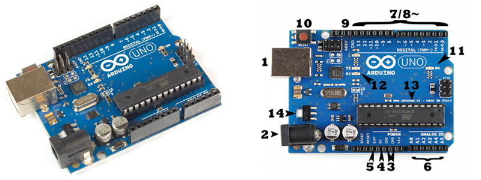

Arduino is a Open source electronics platform based on hardware and software.Arduino boards are able to read Inputs - from sensors and turn it into an output by activating actuators. You can able to control Arduino using set of instructions , to do so we use arduino programming platform called Arduino IDE.
The Arduino project started in 2003 as a program for students at the Interaction Design Institute Ivrea in Ivrea, Italy, aiming to provide a low-cost and easy way for novices and professionals to create devices that interact with their environment using sensors and actuators.Arduino is open-source hardware. The hardware reference designs are distributed under a Creative Commons Attribution Share-Alike 2.5 license and are available on the Arduino website. Layout and production files for some versions of the hardware are also available. The source code for the IDE is released under the GNU General Public License
There are lot of varities of Arduino development boards, they are mainly Arduino Mega ,Arduino Uno, Arduino Nano. Here we are Using Arduino Uno as the developing board.
The Arduino Uno is a microcontroller board based on the ATmega328p. It has 14 digital input/output pins (of which 6 can be used as PWM outputs), 6 analog inputs, a 16 MHz crystal oscillator, a USB connection, a power jack, an ICSP header, and a reset button. It contains everything needed to support the microcontroller; simply connect it to a computer with a USB cable or power it with a AC-to-DC adapter or battery to get started. The Uno differs from all preceding boards in that it does not use the FTDI USB-to-serial driver chip
The Arduino UNO can be powered from a USB cable or from an AC-DC adapter which is terminated in a barrel jack. In the picture above the USB connection is labeled (1) and the barrel jack is labeled (2).
NOTE:Recommended voltage for most Arduino models is between 6 and 12 Volts.(greater than 12 Volts may damage the board )
Pins (5V, 3.3V, GND, Analog, Digital, PWM, AREF)
The pins on your Arduino are the places where you connect wires to construct a circuit. The Arduino has several different kinds of pins, each of which is labeled on the board and used for different functions.
GND (3): There are several GND pins on the Arduino, any of which can be used to ground your circuit.
5V (4) & 3.3V (5): The 5V pin supplies 5 volts of power, and the 3.3V pin supplies 3.3 volts of power and maximum current draw is 50 mA..
Analog pins (6): The area of pins under the ‘Analog In’ label (A0 through A5 on the UNO) are Analog pins. These pins read the signal from an analog sensor and convert it into a digital value that we can read. Also it can perform Analog out
Digital pins (7): There are 14 digital pins in Arduino(0 to 13 ). These pins can be used for both digital input and digital output i.e. Arduino has digital HIGH output of 5V and digital LOW output of 0V.Each pin can provide or receive a maximum of 40 mA and has an internal pull-up resistor (disconnected by default) of 20-50 kOhmsIn addition, some pins have specialized functions:
Reset Button
The Arduino has a reset button (10), pushing it will temporarily connect the reset pin to ground and restart any code that is loaded on the Arduino. The reset button does pretty much the same as unplugging the board and plugging it back in. It restarts your program from the beginning.
Power LED Indicator
Just beneath and to the right of the word “UNO” on your circuit board, there’s a tiny LED next to the word ‘ON’ (11). This LED should light up whenever you plug your Arduino into a power source. If this light doesn’t turn on, there’s a good chance something is wrong.
TX, RX LEDs
TX is short for transmitter, RX is short for receiver. These pins are responsible for serial communication. These LEDs (11, 12) will give us some nice visual indications whenever our Arduino is receiving or transmitting data
ATmega 328p IC
IC or Integrated Circuit (13) or the microcontroller is the main component or can be said as the brain of the Arduino. The main IC on the Arduino is slightly different from board type to board type, but is usually from the ATmega line of IC’s from the ATMEL company. This can be important, as you may need to know the IC type (along with your board type) before loading up a new program from the Arduino software. This information can usually be found in writing on the top side of the IC.
Voltage Regulator
The voltage regulator (14) controls the amount of voltage that is let into the Arduino board. Think of it as a kind of gatekeeper; it will turn away an extra voltage that might harm the circuit. Of course, it has its limits, so don’t hook up your Arduino to anything greater than 20 volts.